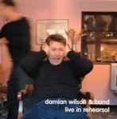

| Artist: | Damian Wilson |
| Title: | Live At Rehearsal |
| Label: | Cosmas Records |
| Length(s): | 46 minutes |
| Year(s) of release: | 2002 |
| Month of review: | [02/2003] |
| 1) | Brightest Way | 3.33 |
| 2) | Homegrown | 4.53 |
| 3) | She's Like A Fable 2.59 | |
| 4) | One Life | 4.20 |
| 5) | When I Leave This Land | 4.51 |
| 6) | Heavenly Mine | 3.07 |
| 7) | Please Don't Leave Me 'Til I Leave You | 3.02 |
| 8) | I Want To Build My World | 4.02 |
| 9) | Naked | 4.01 |
| 10) | Adam's Child | 3.42 |
| 11) | Win In The End | 4.04 |
| 12) | She's Like A Fable | 3.24 |
The first of She's Like a Fable is without Rick Wakeman (I would think, although the cd does not really say so). Lots of dancing piano on this merry tune. One Life seems to me a new song, in the sense that it is not on one of the two studio albums. When I Leave This Land is one of my favourite songs by Damian, a pastoral picture is painted here. This version is much barer than the original, because the chamber orchestra is lacking here. Acoustic guitar, piano and later a guitar solo make this quite different from the original. Strangely enough it is not a problem. The feel is indeed very live and maybe the vocals sound a bit flatter, but all in all this is viable rendition indeed.
Heavenly Mine is a bit of merry ditty, in the line of She's Like A Fable. It is more or less the same as the studio version (to my ears). Please Don't Leave Me 'Til I Leave You is more merriment (and still no prog). I Want To Build My World is quite energetic and one of the better ones on the album. The bridge is good, the strings are very much in evidence. Naked is a typical live track with a raw guitar sound. In fact, this is the only pure rock track of Damian in existence.
After a Britpop beginning, Adam's Child is one of the best songs on Disciple. Again, a very different but good rendition. It turns out that the songs which are changed the most are the most likable ones.
Win In The End is an unknown track for me. It is a bit like a protest song. She's Like A Fable gets another work out, this time with Rick Wakeman playing the piano (at least, the decisiveness of the playing makes me think this is the case).